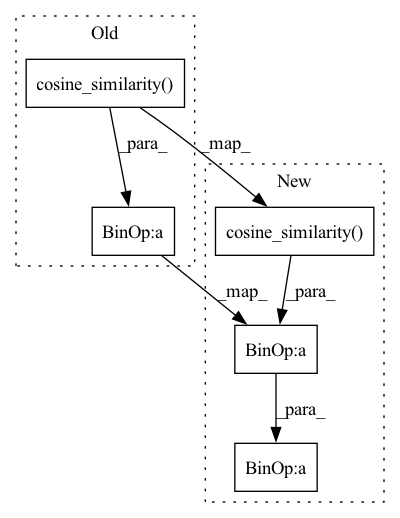

Pattern ID :39040

Before Change
avg_positive = int(mask_4_remove_negatives.detach().float().sum(dim=1).mean())
inst2inst_positives = instance_zone*mask_4_remove_negatives
inst2embed_positive = torch.exp(self.cosine_similarity(inst_embed, proxy)*avg_positive*temperature)
numerator = (inst2inst_positives.sum(dim=1)+inst2embed_positive)
denomerator = torch.cat([torch.unsqueeze(inst2embed_positive, dim=1), instance_zone], dim=1).sum(dim=1)
After Change
// avg_positive = int(mask_4_remove_negatives.detach().float().sum(dim=1).mean())
inst2inst_positives = instance_zone*mask_4_remove_negatives
inst2embed_positive = torch.exp(self.cosine_similarity(inst_embed, proxy)/temperature)
numerator0 = inst2inst_positives.sum(dim=1)
numerator1 = inst2embed_positive
denomerator = torch.cat([torch.unsqueeze(inst2embed_positive, dim=1), instance_zone], dim=1).sum(dim=1)
criterion = -torch.log(numerator0/denomerator).mean() - torch.log(numerator1/denomerator).mean()
return criterion
def calc_derv4gp(netD, real_data, fake_data, real_labels, device):
In pattern: SUPERPATTERN
Frequency: 3
Non-data size: 5
Instances
Fragment ID: 111193040
Project Name: postech-cvlab/pytorch-studiogan
Commit Name: 8b8398ac39e45163161bf0aee8f5df369b12121d
Time: 2020-08-03
Author: first287@naver.com
File Name: utils/losses.py
M Class Name: Conditional_Embedding_Contrastive_loss
N Class Name: Conditional_Embedding_Contrastive_loss
M Method Name: forward(6)
N Method Name: forward(6)
M Parent Class: torch.nn.Module
N Parent Class: torch.nn.Module
M File Name: utils/losses.py
N File Name: utils/losses.py
M Start Line: 117
M End Line: 125
N Start Line: 121
N End Line: 125
'>
Before Change
avg_positive = int(mask_4_remove_negatives.detach().float().sum(dim=1).mean())
inst2inst_positives = instance_zone*mask_4_remove_negatives
inst2embed_positive = torch.exp(self.cosine_similarity(inst_embed, proxy)*avg_positive)
numerator = (inst2inst_positives.sum(dim=1)+inst2embed_positive)
denomerator = torch.cat([torch.unsqueeze(inst2embed_positive, dim=1), instance_zone], dim=1).sum(dim=1)
After Change
avg_positive = int(mask_4_remove_negatives.detach().float().sum(dim=1).mean())
inst2inst_positives = instance_zone*mask_4_remove_negatives
inst2embed_positive = torch.exp(self.cosine_similarity(inst_embed, proxy)*avg_positive*temperature)
numerator = (inst2inst_positives.sum(dim=1)+inst2embed_positive)
denomerator = torch.cat([torch.unsqueeze(inst2embed_positive, dim=1), instance_zone], dim=1).sum(dim=1)
'>
Fragment ID: 111193045
Project Name: postech-cvlab/pytorch-studiogan
Commit Name: 4e1459b0f6ed6614674bb6541b5427a05ed491c6
Time: 2020-08-03
Author: first287@naver.com
File Name: utils/losses.py
M Class Name: Conditional_Embedding_Contrastive_loss
N Class Name: Conditional_Embedding_Contrastive_loss
M Method Name: forward(6)
N Method Name: forward(6)
M Parent Class: torch.nn.Module
N Parent Class: torch.nn.Module
M File Name: utils/losses.py
N File Name: utils/losses.py
M Start Line: 118
M End Line: 121
N Start Line: 118
N End Line: 121
'>
Before Change
similarity_matrix = self.calculate_similarity_matrix(inst_embed, inst_embed)
instance_zone = torch.exp(self.remove_diag(similarity_matrix)/temperature)
inst2proxy_positive = torch.exp(self.cosine_similarity(inst_embed, proxy)/temperature)
if self.pos_collected_numerator:
numerator = inst2proxy_positive
else:
After Change
similarity_matrix = self.calculate_similarity_matrix(inst_embed, inst_embed)
instance_zone = torch.exp((self.remove_diag(similarity_matrix) - margin)/temperature)
inst2proxy_positive = torch.exp((self.cosine_similarity(inst_embed, proxy) - margin)/temperature)
if self.pos_collected_numerator:
numerator = inst2proxy_positive
else:
'>
Fragment ID: 111193046
Project Name: postech-cvlab/pytorch-studiogan
Commit Name: c6322afb52b196de255c666de307ded47c9647f9
Time: 2020-08-08
Author: first287@naver.com
File Name: utils/losses.py
M Class Name: Conditional_Contrastive_loss
N Class Name: Conditional_Contrastive_loss
M Method Name: forward(7)
N Method Name: forward(6)
M Parent Class: torch.nn.Module
N Parent Class: torch.nn.Module
M File Name: utils/losses.py
N File Name: utils/losses.py
M Start Line: 109
M End Line: 111
N Start Line: 107
N End Line: 111